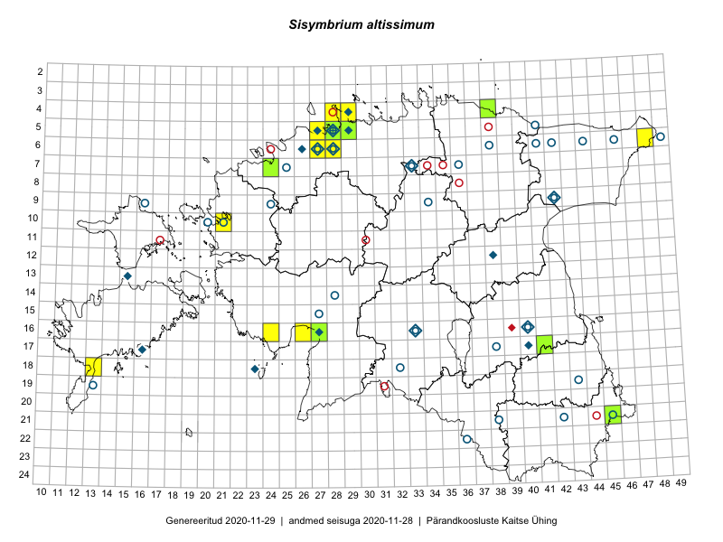

Sisymbrium altissimum
Uuendatud: 2016-12-02
Kaardile koondatud taksonid: Sisymbrium altissimum L.

Kaart põhineb 11 vaatlusel. Taksonit on leitud 8 ruudust.
Viited andmebaasikirjetele
- Meeli Mesipuu: 2015-07-18: 16-26: ala
- Meeli Mesipuu: 2015-07-18: 16-26: GPS punkt
- Maret Gerz, Leena Gerz: 2015-08-09: 16-24: ala
- Erkki Otsman, Sergei Smirnov: 2015-07-12: 05-29: ala
- Peedu Saar, Sander Laherand: 2013-07-07: 05-29: ala
- Tõnu Ploompuu: 2015-06-06: 06-28: ala
- Tõnu Ploompuu: 2015-08-21: 10-21: ala
- Sander Laherand, Tõnu Ploompuu, Nele Jõessar: 2016-07-25: 04-29: ala
- Mari Reitalu, Sirje Azarov: 2016-07-31: 18-13: ala
- Kadi-Liis Kesler, Tiina Elvisto: 2015-05-12: 05-29: ala
- Kadi-Liis Kesler, Tiina Elvisto: 2015-05-27: 04-28: ala